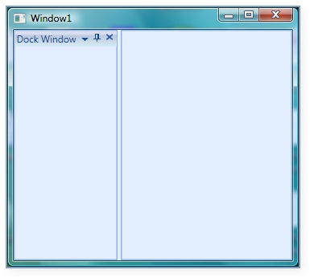
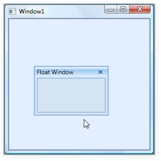
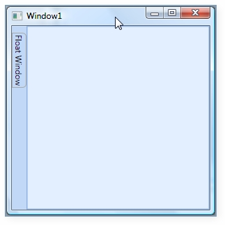
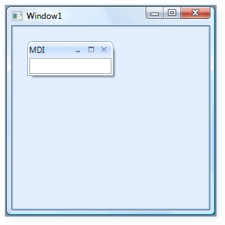
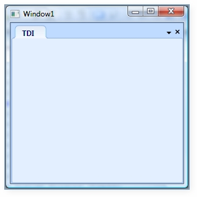

States of child is nothing but a different appearance of the DockingManager children. State Property in DockingManager is used to set various states to the child element such as Docking, Floating, Auto Hide, Hidden.
Dock State:
Dock State is a state which represents the child as Dock Window as shown below:
|
[XAML] <syncfusion:DockingManager> <Grid Name="grid1" syncfusion:DockingManager.State="Dock" syncfusion:DockingManager.Header="Dock Window"/> </syncfusion:DockingManager> |
|
[C#] DockingManager.SetHeader(grid1,"Dock Window"); DockingManager.SetState(grid1, DockState.Dock); |

Figure 308: Illustrating DockState of child
Float State:
Float State displays the child in FloatWindow as shown below:
|
[XAML] <syncfusion:DockingManager> <Grid Name="grid1" syncfusion:DockingManager.State="Float"/> </syncfusion:DockingManager> |
|
[C#] DockingManager.SetState(grid1, DockState.Float); |

Figure 309:Illustrating Float State
Auto Hidden State:
Auto hidden state hides the children in one of the side panels available with the DockingManager.
|
[XAML] <syncfusion:DockingManager> <Grid Name="grid1" syncfusion:DockingManager.State="AutoHidden"/> </syncfusion:DockingManager> |
|
[C#] DockingManager.SetState(grid1, DockState.AutoHidden); |

Figure 310: Illustrates AutoHidden State
The Document state is the child’s children, which can be displayed as a Tabbed document or (Multiple Document Interface) MDI.
Document State Child can be of two types.
· TDI (Tabbed Document Interface)
· MDI (Multiple Document Interface)
You can create MDI Documents by specifying ContainerMode to MDI as a child state,and as Document , as shown below.
|
[XAML] <syncfusion:DockingManager UseDocumentContainer="True" ContainerMode="MDI">
<Grid Name="grid1" syncfusion:DockingManager.State="Document" syncfusion:DockingManager.Header="MDI"/>
</syncfusion:DockingManager> |
|
[C#]
DockingManager manager=new DockingManager(); manager.UseDocumentContainer = true; manager.ContainerMode = DocumentContainerMode.MDI; Grid child=new Grid(); DockingManager.SetHeader(child, "MDI"); DockingManager.SetState(child,DockState.Document); manager.Children.Add(child); |

Figure 311: MDI Mode
Similarly you can create a TDI Document by specifying ContainerMode as TDI and child state as document.
|
[XAML] <syncfusion:DockingManager UseDocumentContainer="True" ContainerMode="TDI">
<Grid Name="grid1" syncfusion:DockingManager.State="Document" syncfusion:DockingManager.Header="TDI"/>
</syncfusion:DockingManager> |
|
[C#]
DockingManager manager=new DockingManager(); manager.UseDocumentContainer = true; manager.ContainerMode = DocumentContainerMode.TDI; Grid child=new Grid(); DockingManager.SetHeader(child, "TDI"); DockingManager.SetState(child,DockState.Document); manager.Children.Add(child); |

Figure 312: TDI Mode
Refer Also:
How to Create Docking Manager?